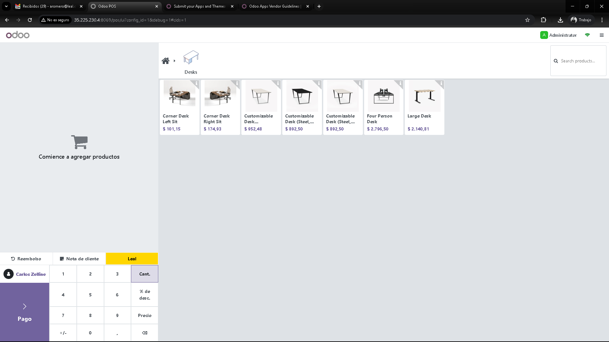
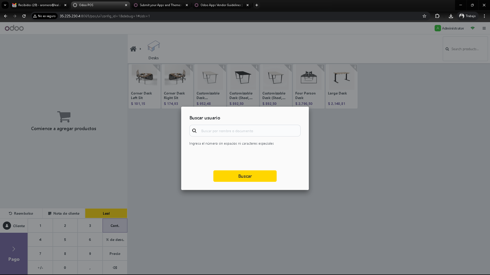
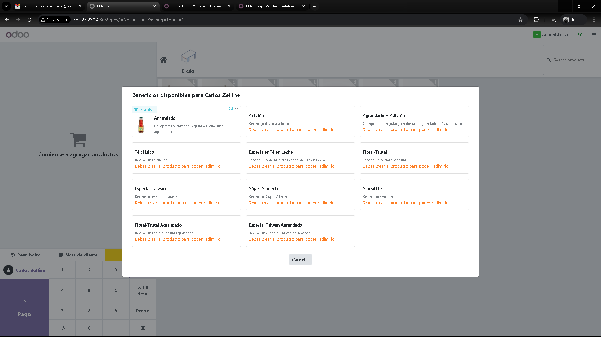
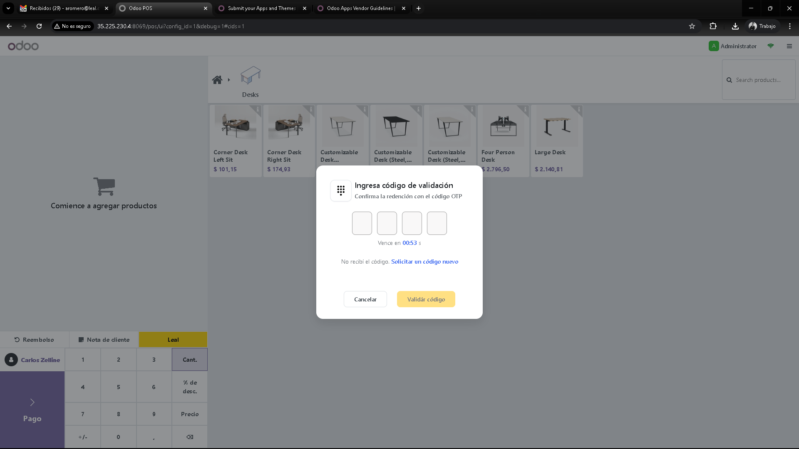
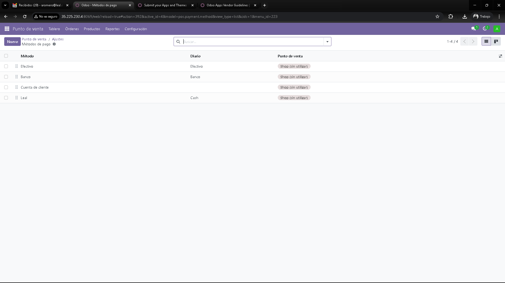

Ofrezca una recompensa instantánea y tangible a sus clientes más leales, incentivando futuras compras.
Integre la redención de puntos de forma nativa en el flujo de pago del POS, sin interrumpir al cajero.
Valide la identidad del cliente y confirme las redenciones con códigos OTP para máxima seguridad.
Motive a sus clientes a volver más a menudo para usar sus puntos acumulados.
Active la integración en minutos introduciendo sus credenciales de API de Leal en los ajustes de Odoo.
Cada redención queda registrada en Odoo, permitiendo un seguimiento y una contabilidad precisos.
Un flujo simple y potente integrado en su Punto de Venta.
Paso 1: El cajero hace clic en el nuevo botón "Puntos Leal" en la pantalla de pago.

Paso 2: Se introduce el documento o correo del cliente para buscarlo en la base de datos de Leal.

Paso 3: El sistema muestra el saldo de puntos disponible y las opciones de redención.

Paso 4: Tras validar con OTP, los puntos se aplican como un método de pago, cubriendo total o parcialmente la compra.
Vaya a Punto de Venta > Configuración > Ajustes y encontrará la nueva sección para Leal.

Simplemente ingrese sus credenciales de API y seleccione los diarios correspondientes. ¡Eso es todo!
Nuestro equipo está listo para ayudarle con la instalación, configuración o cualquier personalización que necesite.
Contáctenos en pparra@leal.co o visite nuestro sitio web www.leal.co.